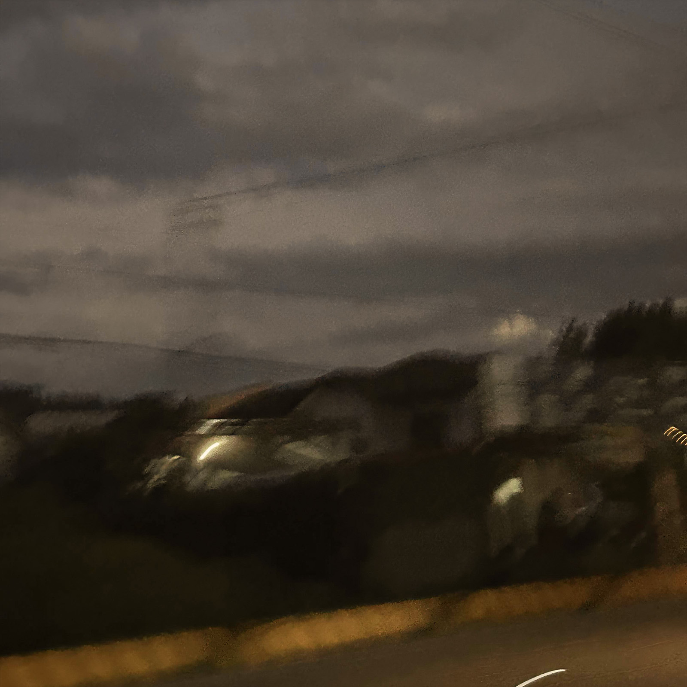

enter leafo's mind: I
r u alright
the intro song - my previous-previous ex girlfriend, we had a really bad breakup and i just wanted to ask if shes
alright after all of that happened. this song is also a direct sequel to "r u ok" wherein i genuinely wanna know if
shes doing alright since i never got the chance to ask... 'r u ok' was the question in my mind for the longest time
but the question i was able to bring out was 'r u alright'...... pretty much mean the same thing but on a deeper level, you'll get it :)
fourteen
the whole meaning of this song is in the chorus itself. this song is also the very first song of mine where its been
in a spotify editorial playlist lol. anyways, this song is about that feeling when you fall inlove at a young age but suddenly it just disappears as time moves on. i had the 'one four' idea for so long and im glad i was able to execute it just fine in this album.

i know
idk this song basically has that delusional feeling when you think that they still think about you. i wrote this a
looooong time ago so i just thought it was a perfect addition to the album lol. i used to have this feeling wherein
im still stuck in the past and everything is filled with memories of what she and i used to have. ive finally moved
on from it and left it all in the past after recording this song last december and repolishing it with a new
instrumental months after. hell yeaaah.

find what you love and let it kill you
the album name and the first two part song i have ever done. this song took me three months to make cuz i did not know
how to perfectly execute this. i really love the meaning and the metaphor behind this song as the entire song is a
metaphor for heartbreak. the first half goes on about why do i feel so shit and invisible and unheard to the people
i love like why do i never feel noticed anymore and as the tension builds up, we get to the second half where it
explains everything (why im being ignored nd shit). the high energy second half of the song is basically death.
she killed you. a metaphor of what she did emotionally after yall broke up. tried my best to not sound edgy with
the explanation but i wanted yall to see it with in my vision so idk. ;)
surprise, theres nothing left
my previous-previous ex and i had a really complicated post-breakup. i dont wanna get into it too much cuz its
actually just insane but overall, this song was written about when ive been holding on to the hope that she would
return lol yeah. i kept the hope that maaaaaaybe yooooouuuuuuuuuuuud retuuuuuurnnnnnnnnnnn!i!i!ii!i!i!i!i!i!i!i!!ii!i!

im sorry i pushed u away
an apology to my previous ex who i keep pushing away whenever i feel like shit. its an immature and selfish habit
i built up wherein id push everyone away & isolate myself so i dont bring out anymore of my bad temper and its a
really bad habit but ive been getting help and trying to be more open and communicative which is pretty cool i guess ;p

alie
the first love song of the album after six tracks of singing about heartbreak, loss, and envy LMAO. might sound
different from the past 6 tracks too but thats the point of it all lol, as it signifies something new...... i just cant stop
thinking about this one girl who i knew for a long time, havent talked to her in years and idk i started to like
her and eventually we reconnected after years so.......... W??? idk lol, shes beautiful as fuck and i wanna kms
cuz im a loser n i js make music and thats it.
oh yeah i also feel envious sometimes lol
pretty short description but its just a song i wrote cuz i felt envious for a short period of time towards this
friend i had. thats pretty much abt it.

trial + error
a song for a ex-friend who ive had a terrible falling out with, lowkey sucks cuz i also grew up with that person too
and it just hurts to see them switch up. ive had my faults too and i owned up to it but idk shit was weird and the
whole thing was weird and one thing led to another and somehow the whole friend group fell apart. (yes my irls)...
i dont know u anymore like i used to
the very first lead single which released last year (also the song that gave me hella views on tiktok lol, people
discovered me from that vid). this song is about that previous-previous ex girlfriend of mine wherein there are 2
different versions of her: when we started dating and when she left. "i dont know you anymore" is a line i kept
repeating in my head the day we broke up (i never directly said it to her) cuz the girl whom i loved was not the
same girl who left me if yall get what im trying to put here. it sucks cuz i met her when we were really young
(around 7-8) and we grew up together too. we started dating in high school then yeah she left but its okay cuz i
got my bag up :p

alimango
alimango is a tagalog word for crab. i chose the word crab because of how the 'crab mentality' is just normalized
here in the philippines which is really fucked up. similar to the 8th track but more hurtful in a way i actually
couldnt bear it. ive always been compared so much growing up which made me feel worthless and belittled throughout
my life. thats all idk what else to say imma keep it a buck wit u looool.........

summer's over sorry
i got into spoken poetry lately so it started out as that then i thought to myself "what if i turn ts to a song"
and......... so i did........... the song is basically about how i want to meet my younger self and see how much
hes grown into this person he didnt expect to be. summer's over as a title is somewhat a way of me telling that
the fun in life as a kid is slowly disappearing and fading as i turn older and into more an adult. im freshly 18
and lowkey, i just wanna talk to my younger self.

a page off the book
i dont really think its hard to miss but its just another metaphor i thought of wherein i imagined a scenario
that she just never dated me instead, like how easy it is to rip a page off a book. the entire page is filled of
us and idk i js imagined that she would tear it from the book. thats all lol.
myself
my mental was really starting to wear me down when i was sixteen to the point i had thoughts of actually doing it. i
found an old note i had written that i never got to finish cuz my friends (who i am thankful for) asked me to
play roblox lol. even the simplest thing can do so much for a person and no one realizes it til its too late
so im thankful for my friends cuz everything yall are reading, viewing, listening to right now would not exist if it werent for them. love yall bruh.
growth, from two-thousand seven
the outro song - i posted a video wherein i talked about the story of growth and how its really powerful as
life goes on and how i want to share it with you all. the sudden instrumental cut at the end symbolizes how if i die, my music dies with me and i think its a beautiful thing idk. yall have seen me
grow as a person and i love yall for staying with me. two-thousand seven in the title doesnt really mean anything since its
the year i was born lol. but i just thought that maybe this meaning of a song would be a good outro. idk im
buggin. this whole album i sang about heartbreak and loss and envy but here, i sing about thanking and apologizing to people who have kept me alive for years as i also sing about 2 people who i hold so dearly in my
heart; my grandma and my dad. i cried to this the moment i heard it after making this and lowkey, a simple
thank you isnt enough for everything they provided for me hahaha. check out the video here